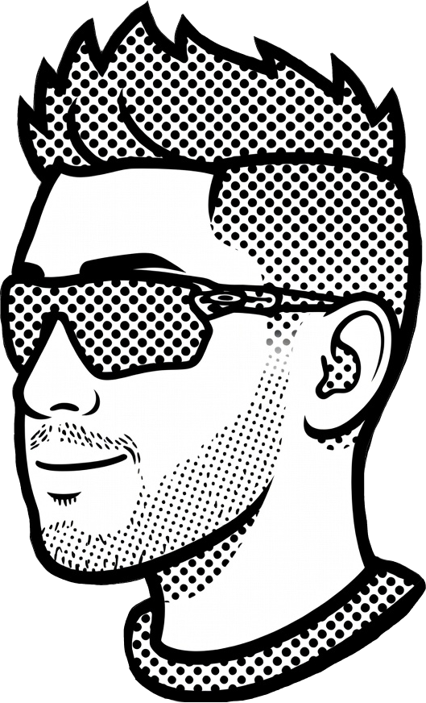
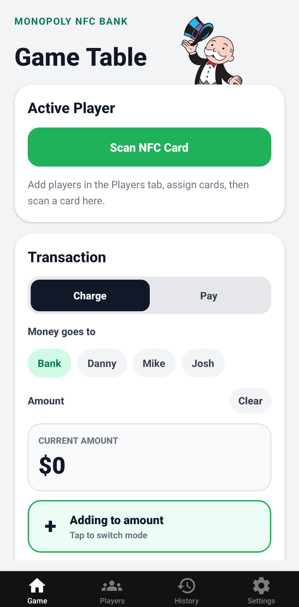
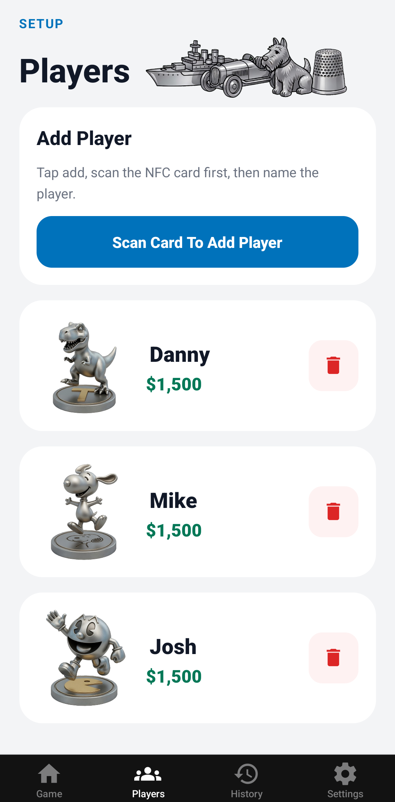
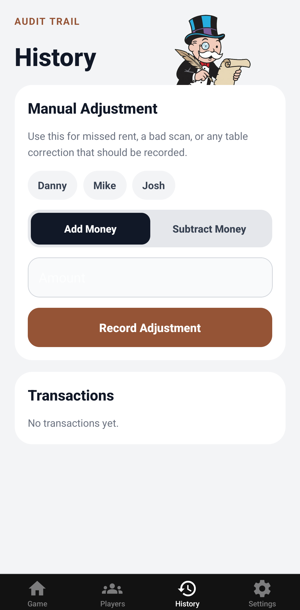
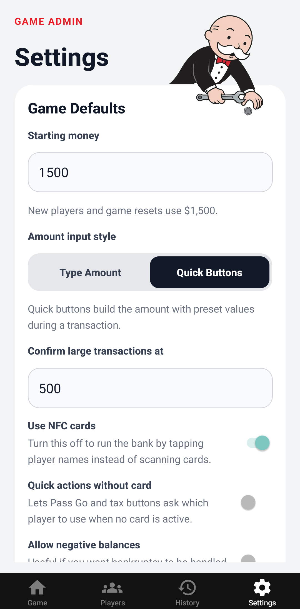

Building things
that matter.

👋 Hi. I'm Danny Guerrero — a software developer from South Texas. I've been obsessed with programming ever since I learned I could edit an .html file as a kid.
Most of my work lives in the world of JavaScript, with React being my main tool for building UIs. I also work across backend systems, APIs, and databases to make everything come together behind the scenes.
I enjoy creating things that are both useful and visually interesting — whether that's a polished brochure website for a local business, a React Native app, a game plugin, or some weird experimental side project at 2AM because my brain said "what if?" 😅
Currently focused on freelance web development, improving my craft, and building tools that help real people.
Projects
Monopoly Bank
A mobile companion app for the classic Monopoly board game.
Track player balances in real time with a fun NFC card twist.




The Stack
- HTML / CSS
- JavaScript / TypeScript
- React / Next.js
- Tailwind CSS
- Responsive UI Design
- Node.js / Express
- REST APIs
- MySQL / SQLite
- Authentication
- WebSockets
- PHP
- React Native
- Git / GitHub
- Docker
- Bilingual (English / Spanish)
My other
obsessions.
When I'm not building websites or apps, I'm usually deep into strategy games, logic puzzles, or baseball statistics.
I love games that reward problem solving and systems thinking — especially games like Portal, Human Resource Machine, and 7 Billion Humans. Anything that feels like programming disguised as a game instantly hooks me.
I’m also a huge baseball ⚾ fan. I can disappear for hours looking at MLB stats, player analytics, standings, and historical comparisons. Go Rangers! 😊
Outside of tech, I enjoy learning random things. Math also really fascinates me, I'm no expert, but I just love how it powers a lot of things around us. Binary in computers, probability in games and baseball, trigonometry in game engines, animations, physics simulations. I enjoy understanding the ideas underneath the things we use every day.
A lot of my curiosity stems from understanding how things work underneath the surface. From opening up calculators as a kid to going through open-source code. 😅
Let's build
something cool.
Need a website, frontend work, custom tools, or just want to talk about development and ideas? Feel free to reach out.